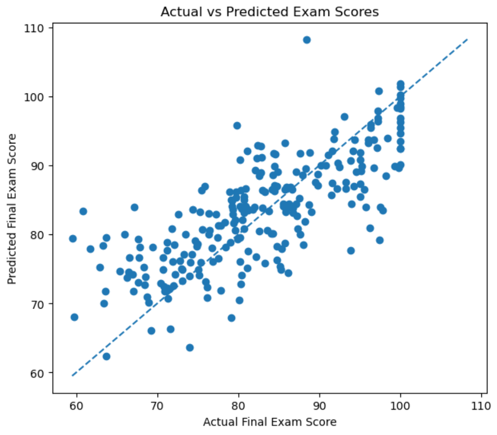
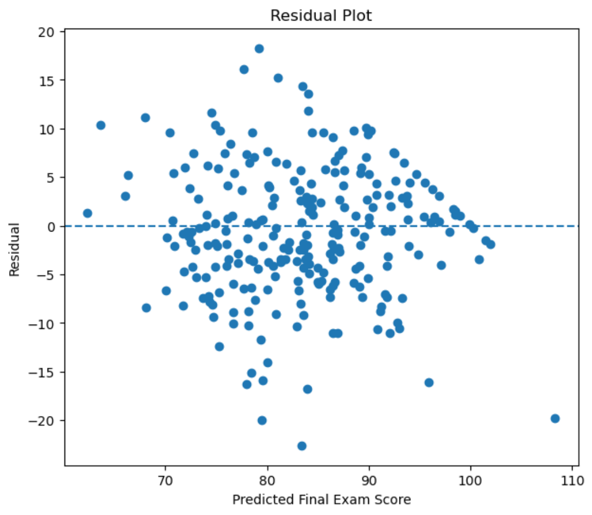

Student Performance Prediction
Machine Learning • Regression • Education Analytics

This project explores a student performance dataset and applies machine learning to predict final exam scores using academic and behavioral features. Rather than focusing only on training a model, the project follows the broader machine learning workflow: understanding the dataset, identifying useful features, handling categorical data, preventing data leakage, building a baseline, training a regression model, and evaluating how well the model generalizes to unseen students.
TL;DR
A multiple linear regression model that predicts student final exam scores using study time, internet access, attendance, and previous grades.
My Role
Built the workflow from data exploration and preprocessing through train/test splitting, baseline construction, regression modeling, coefficient interpretation, and performance evaluation.
Tech
Links
Overview
The dataset contains 1,000 student records and 12 columns covering academic habits, lifestyle information, educational background, and final performance. Some of the available features include study time, attendance, sleep hours, internet access, previous grades, extracurricular activities, part-time job status, parental education, final exam score, and final grade.
Regression Goal
The first stage of the project treats student performance as a regression problem. The target variable is:
final_exam_scoreThe initial model uses four predictor variables:
- Study Time: Number of hours spent studying.
- Internet Access: Whether the student has access to the internet.
- Attendance: Percentage of classes attended.
- Previous Grade: Previous academic performance.
Avoiding Data Leakage
One important modeling decision was to exclude final_grade from the regression features. Because the final grade is closely related to the student's final exam result, using it to predict the exam score could allow the model to access information that effectively reveals the answer. This is a form of data leakage, which can produce unrealistically strong model performance.
Initial Data Exploration
Before training the model, I inspected the shape, columns, example rows, and missing values in the dataset.
import pandas as pd
df = pd.read_csv("student_performance_dataset.csv")
print(df.shape)
print(df.columns)
print(df.head())
print(df.isna().sum())During exploration, I found missing values in the parental_education feature. That feature was not included in the initial regression model, but it provides an opportunity to explore missing-value handling in later versions.
Exploratory Data Analysis
Matplotlib and Seaborn are used to explore the distributions of individual variables and examine relationships between student characteristics and performance.
The goal of the EDA stage is to understand questions such as:
- How is the final exam score distributed?
- Does increased study time generally correspond to higher scores?
- How strongly is attendance associated with exam performance?
- How informative are previous grades?
- Are there unusual values or obvious outliers?
Preprocessing
The internet_access feature is categorical and contains two values:
Yes
NoIt was converted into a binary numerical feature:
df["internet_access"] = df["internet_access"].map({
"No": 0,
"Yes": 1
})The selected predictors and target were then separated.
X = df[[
"study_time_hours",
"internet_access",
"attendance_percent",
"previous_grade"
]]
y = df["final_exam_score"]Train/Test Split
The dataset was split using a 75/25 train-test ratio. This gives the model 750 student records for training and keeps 250 students completely separate for evaluation.
from sklearn.model_selection import train_test_split
X_train, X_test, y_train, y_test = train_test_split(
X,
y,
test_size=0.25,
random_state=42
)Linear Regression Model
A multiple linear regression model was trained using scikit-learn.
from sklearn.linear_model import LinearRegression
model = LinearRegression()
model.fit(X_train, y_train)
predictions = model.predict(X_test)During training, the model learns an intercept and one coefficient for each input feature. Instead of manually choosing those values, the fitting process estimates the coefficients that best describe the relationships found in the training data.
Model Results
MAE
5.21
Train RMSE
6.20
Test RMSE
6.69
R²
0.575
The MAE indicates that the model's predictions differ from the actual final exam scores by approximately 5.2 points on average. The training RMSE of 6.20 and testing RMSE of 6.69 are relatively close, suggesting that the current model does not show an obvious large overfitting gap.
Baseline Comparison
To determine whether the regression model was actually learning useful patterns, I compared it with a simple baseline predictor. The baseline predicts the average training-set exam score for every student.
baseline_value = y_train.mean()
baseline_predictions = np.full(
len(y_test),
baseline_value
)Baseline RMSE
10.33
Linear Regression RMSE
6.69
The regression model substantially improves upon the baseline. This is more informative than evaluating the RMSE in isolation, because it demonstrates that the model is learning useful relationships from the selected features.
Learned Coefficients
Linear regression also makes it possible to inspect the estimated relationship between each feature and the predicted exam score.
| Feature | Coefficient |
|---|---|
| Study Time | 4.21 |
| Internet Access | 6.05 |
| Attendance | 0.33 |
| Previous Grade | 0.35 |
For example, with the other variables held constant, the model associates one additional hour of study time with roughly a 4.2-point increase in predicted exam score. These coefficients represent relationships learned from this dataset and should not automatically be interpreted as causal effects.
Media


Next Steps
The project is still evolving. Planned extensions include deeper residual analysis, feature selection, cross-validation, and comparison with additional regression algorithms.
- Analyze residuals and identify where the model performs poorly.
- Experiment with additional features such as sleep hours, extracurricular activities, and employment status.
- Handle missing values in parental education.
- Use cross-validation for more reliable model evaluation.
- Compare linear regression with other regression algorithms.
- Turn final_grade into a multiclass classification target.
- Compare different classification algorithms and metrics.
- Recreate parts of the machine learning workflow using PyTorch.
What I Learned
- How to explore and inspect a dataset before modeling.
- How to select predictor variables and prediction targets.
- How categorical variables can be encoded for regression.
- Why identifiers such as student IDs should not be model features.
- How data leakage can produce misleading model performance.
- How to create reproducible training and testing subsets.
- How multiple linear regression learns coefficients.
- How to interpret MAE, RMSE, and R².
- Why comparing a model to a baseline is important.
- How train and test error can help identify possible overfitting.
- Why regression coefficients describe associations rather than automatically proving causation.
Repository
Explore the dataset, notebook, code, and continued development on GitHub: Student Performance Prediction